Overview
This game is a sample: a vertical slice, not a complete game. It was built from the GDD the client shared with us. The same GDD had already been put through other tests: the game was first built in HTML only, then in Unity (see those versions). This version recreates it with Blender and Godot.
A first version was built directly in Godot from downloaded asset packs. It did not reach the quality bar, especially the guns and hands, so it was set aside and the game was rebuilt Blender first, in the order below.
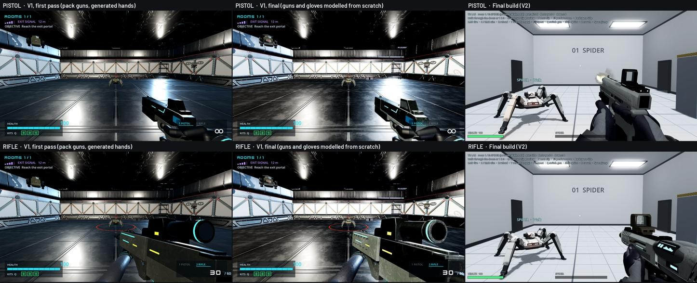
-
Concept art
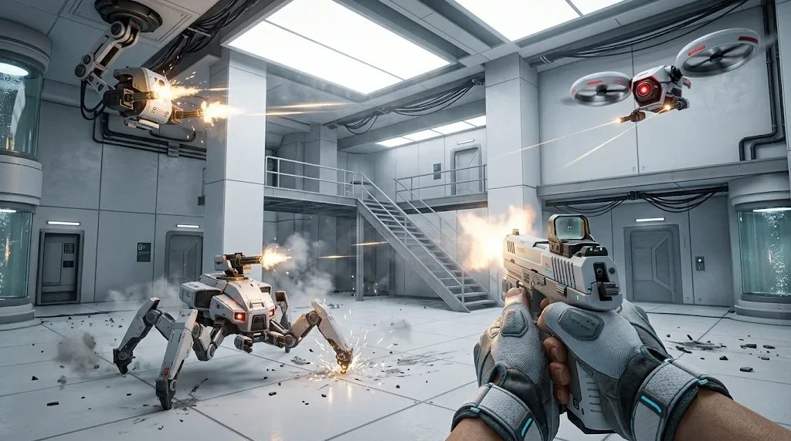
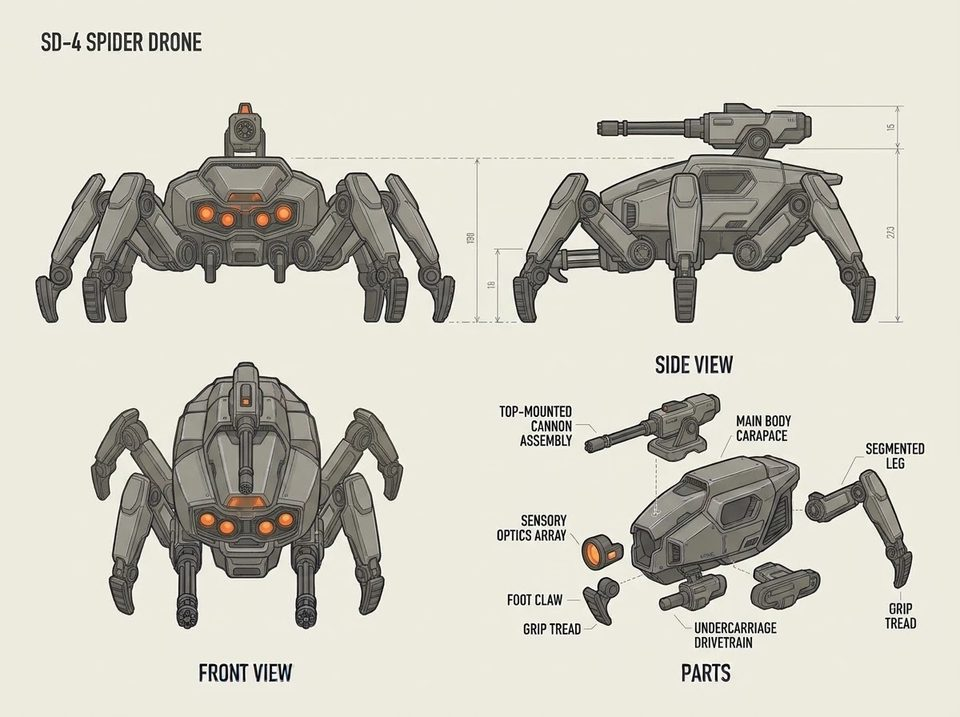
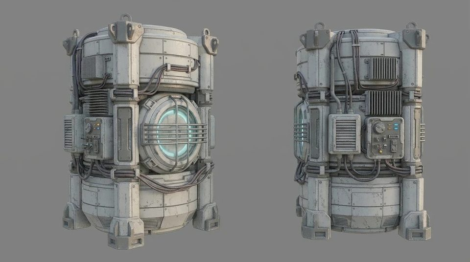
Goal
Give Claude an image to work from instead of a written description.
Steps
- Generate 2D concept art with AI: the whole scene, the gloved hands, 24 reference sheets for the environment pieces.
- Design a UI concept for the interface.
Learnings
- Results became consistent once there was a reference to follow.
- Reference images of how a gun is held fixed what written instructions could not.
Tools
- AI image generation (Google Gemini for the hand references).
- Reference images of first-person gun holds.
-
Modelling in Blender
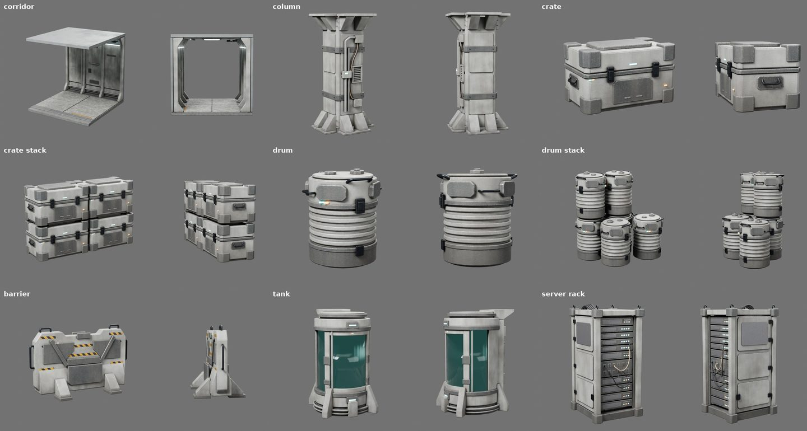
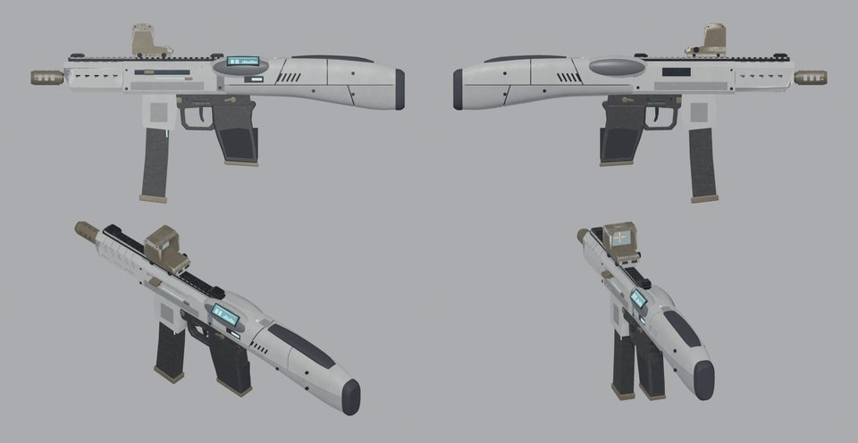
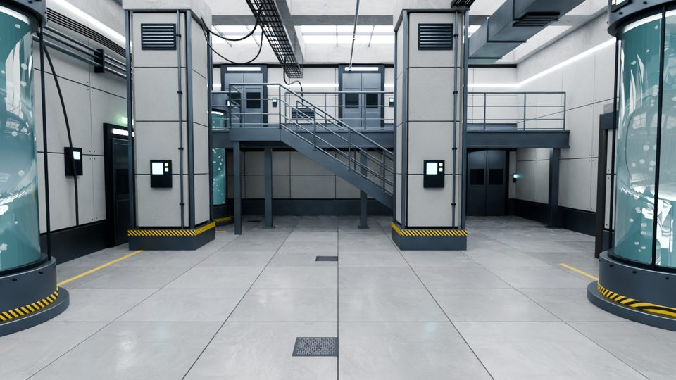
Goal
Model every asset from scratch, so the look is under control and the game does not depend on external models.
Steps
- Feed the concept art to Claude, which models it in Blender.
- Review the renders and ask for adjustments.
- Approve each asset, or a sheet of them, before it goes into the game.
Learnings
- Downloaded packs looked too cartoonish and ready-made hands too blocky.
- Setting a clear bar helped: "grounded military hardware", then "AAA".
- The hands were the hardest part: the grip, the thumb and the knuckles passing through the gun took many rounds.
Tools
- Blender 4.2 LTS, driven by Python scripts (a change is a re-run, not a hand edit); Cycles for review renders.
- ambientCG PBR textures (CC0).
- MakeHuman base mesh (CC0) for the player's arms.
-
Rigging and animation in Blender

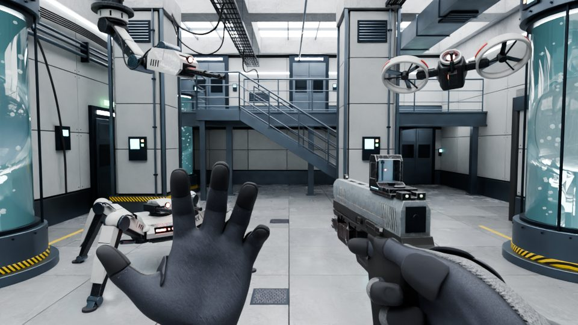
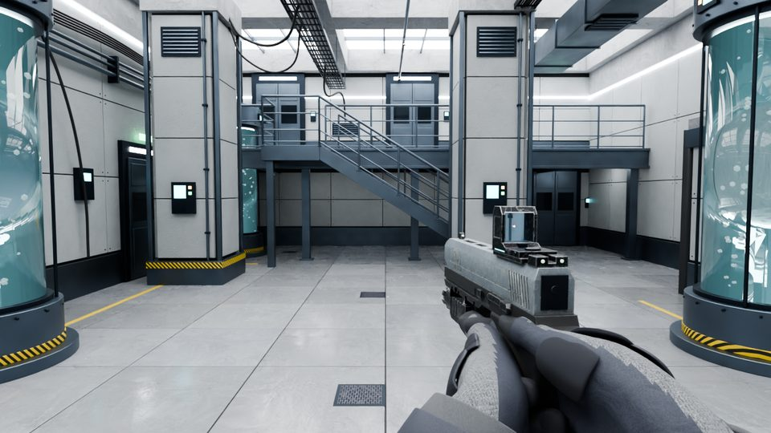
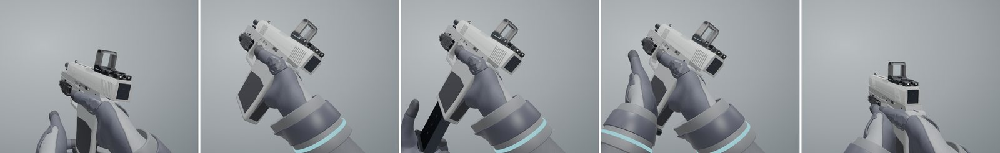
Goal
A set of clips for each gun with its hands, and for each robot: idle, shoot, move and death.
Steps
- Describe each animation in plain language: idle sway, fire, reload, inspect.
- Claude says what is feasible, then rigs and animates.
- Review the motion and ask for another pass where needed.
Learnings
- Motion needs impact: the robots were reworked to be juicier, more exaggerated and more dramatic.
- Keep it simple: hiding the hands during part of an animation beats fighting the rig.
Tools
- Blender armatures: the MakeHuman skeleton and skin weights (CC0) for the arms; joints for the robots' moving parts.
- Clips baked at 24 fps, with a clip table exported alongside each model.
-
Building the game in Godot
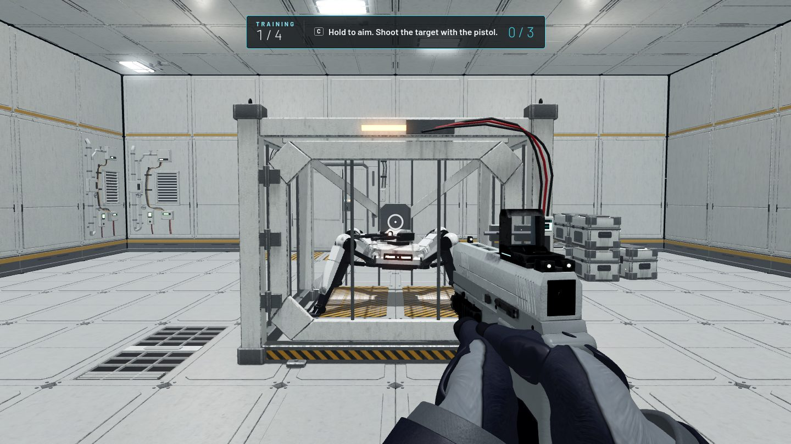
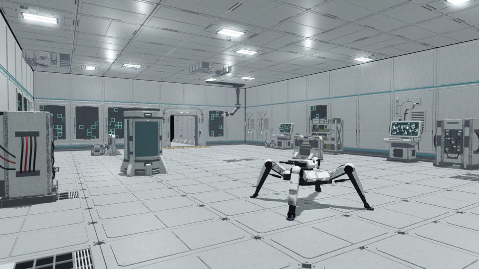
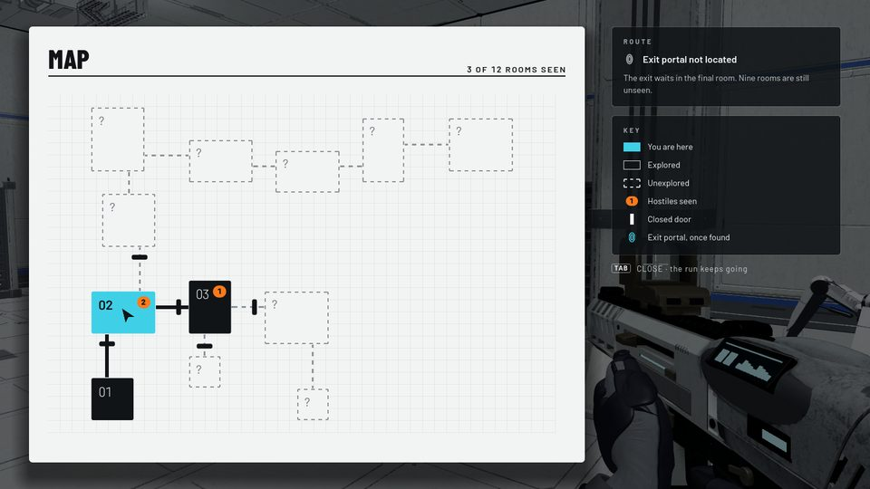
Goal
The final game, following the GDD's loop, with the look approved in Blender.
Steps
- Bring the models and clips into a test lab: one room per robot.
- Tune animations, gunfire, sound and feel there.
- Build the GDD's loop: the generated dungeon, a training room, the UI and menu music.
- Play, report what feels wrong, fix, repeat.
Learnings
- Feel matters as much as looks: stronger recoil, realistic recorded sounds, electrical smoke from wrecks, quieter footsteps.
- Playing found what automated tests did not: lights flickering under doors, the frame rate, a spider that seemed to float when shot.
Tools
- Godot 4.3 (GL Compatibility renderer, exportable to the web); models brought in as glTF (.glb).
- Sounds from OpenGameArt (CC0), including The Free Firearm Sound Library; menu music "Exploration Theme" by Cleyton Kauffman (CC0).
- Barlow fonts (SIL Open Font License).
- Automated checks and a bot that plays whole runs to measure balance.